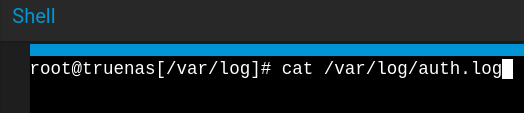
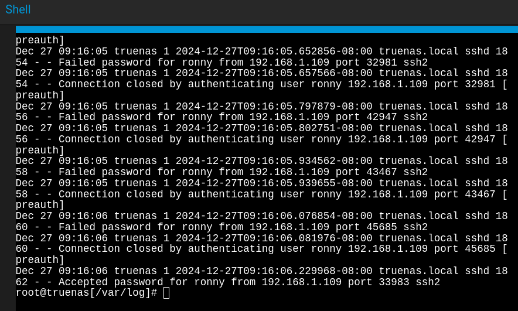
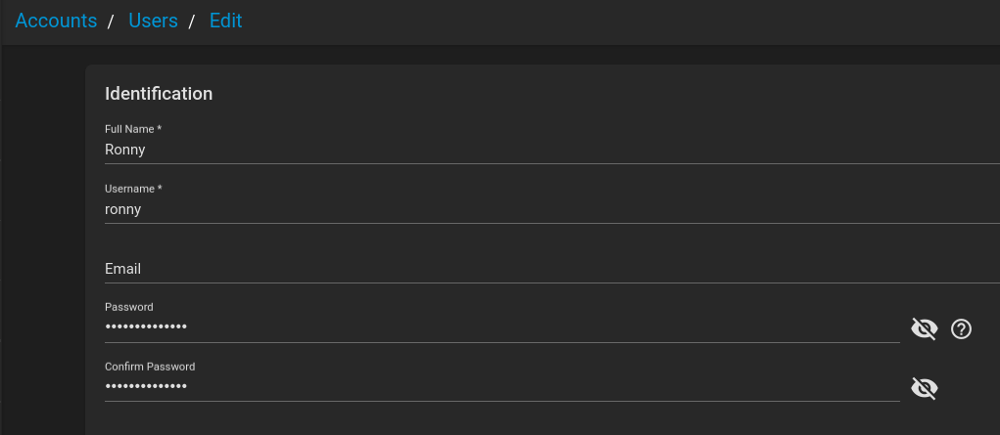
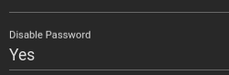

Gaining access to the target server via successful brute force attack through the use of the SSH service.
We know from the port scan in the previous lab that port 22 on the NAS server is open and running SSH. In this scenario, the NAS server is configured with a user account that has a weak password. Using the Metasploit auxiliary module auxiliary/scanner/ssh_login, a successful brute force attack is performed, leading to the compromise of the NAS server on the offensive side.
On the defensive side, the logs are reviewed to identify the successful brute force login to the server via the SSH protocol, and further mitigation procedures are implemented.
Here, access has been gained with a bsd shell. I'm going to upgrade this to a Meterpreter session with the use of post exploit module post/multi/manage/shell_to_meterpreter


In reviewing the authentication logs on the server, here we see recorded failed login attempts, and the successful login on the last line.
 Upon detecting this, I would immediately reset the password, disable the account from being logged into, and proceed with further incident investigation.
 While the investigation and other incident response procedures are underway, I would also configure the server to mitigate brute force attacks.
For example, I would set the following configurations on the NAS server.
Disable Password-based Login for SSH
I would disable SSH password-based authentication on the server and set up SSH to only use public-key based authentication for the accounts that need to connect to SSH.

 Back to Lab Projects
Back to Lab Projects